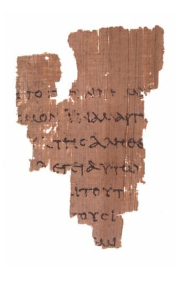
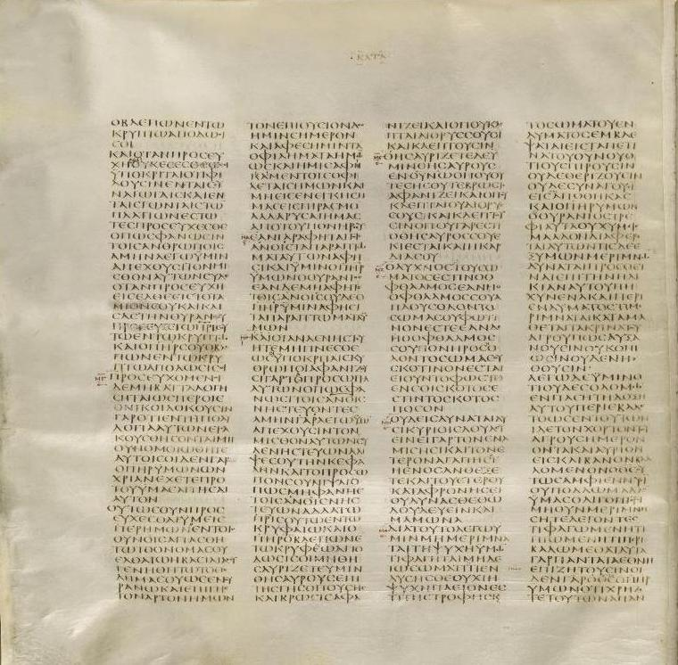

Antes de preguntar qué hizo o dijo Jesús, hay que preguntar algo más básico: ¿cómo lo sabemos? ¿Qué fuentes tenemos, cuándo se escribieron, y cómo separa el historiador lo probable de lo legendario?
Empezamos una serie sobre uno de los personajes más influyentes de la historia, y lo hacemos con el mismo método de todo el blog: como historia, no como fe. La disciplina académica del "Jesús histórico" intenta reconstruir, con herramientas de historiador, al Jesús de Nazaret que vivió realmente en la Galilea del siglo I —distinguiéndolo del Cristo de la teología posterior—. No afirmamos ni negamos las afirmaciones de fe (milagros, resurrección, divinidad): eso queda, como siempre, fuera del alcance del método histórico y pertenece al terreno de cada creyente. Aquí preguntamos solo lo que la evidencia permite preguntar. Y todo empieza por las fuentes.
Conviene despejar esto primero, porque a veces se plantea. Entre los historiadores hay consenso amplio en que Jesús existió como figura histórica: un predicador judío de Galilea, activo hacia el año 30, bautizado por Juan y ejecutado por Roma. La idea de que Jesús nunca existió (el "miticismo") es una posición marginal, sostenida por muy pocos especialistas del campo.
¿Por qué esa seguridad? Porque hay varias fuentes tempranas e independientes, algunas incluso no cristianas, que lo mencionan. La discusión seria no es si existió, sino qué se puede saber de él con fiabilidad. Y ahí es donde el asunto se vuelve delicado y fascinante.
El historiador trabaja con lo que tiene. Para Jesús, las fuentes son de dos tipos:
Las cartas de Pablo son lo más antiguo: escritas hacia los años 50, apenas dos décadas después de la muerte de Jesús, aunque hablan poco de su vida terrena. Los evangelios (Marcos, Mateo, Lucas y Juan) se escribieron más tarde —Marcos, el primero, hacia el 70; Juan, el último, hacia el 90-100—, es decir, entre cuarenta y setenta años después de los hechos, y no por testigos directos, sino por autores de la siguiente generación que recogían tradiciones transmitidas oralmente.

Los evangelios no son crónicas neutrales: son testimonios de fe, escritos para proclamar y convencer. Eso no los invalida como fuente histórica, pero obliga a leerlos con ojo crítico, distinguiendo el recuerdo del añadido teológico.
Y aquí está lo valioso para el historiador: hay menciones externas. El historiador judío Flavio Josefo (hacia el 93) menciona a Jesús dos veces —aunque uno de los pasajes fue retocado después por copistas cristianos—. Y el historiador romano Tácito (hacia el 116) refiere que "Cristo" fue ejecutado por Poncio Pilato bajo Tiberio. Son breves, pero independientes de la tradición cristiana, y confirman el núcleo: un tal Jesús, ejecutado por Roma en tiempos de Pilato.

Ante fuentes tardías y de fe, ¿cómo criba el historiador lo que probablemente ocurrió? Con una serie de criterios de historicidad. Los principales:
El criterio de dificultad (o "vergüenza"): si un dato era incómodo para los primeros cristianos, probablemente es histórico —nadie inventaría algo que le complica la vida—. Ejemplo clásico: que Jesús fuera bautizado por Juan (lo que parece ponerlo por debajo de Juan) es tan incómodo que casi seguro ocurrió.
El criterio de testimonio múltiple: si un dato aparece en varias fuentes independientes entre sí, gana fiabilidad. El criterio de plausibilidad contextual: lo que encaja con la Galilea judía del siglo I es más creíble que lo que suena a añadido griego posterior. Con estas herramientas, los estudiosos ordenan las afirmaciones sobre Jesús según su solidez. Prueba a explorarlas:
Fíjate en el código de color: del verde (prácticamente seguro) al violeta (solo teológico, fuera del alcance histórico). Esta será nuestra brújula en las próximas entregas. La historia no puede pronunciarse sobre lo violeta —ni a favor ni en contra—; se ocupa de lo verde, lo amarillo y lo rojo.
Sabemos de Jesús por fuentes cristianas (las cartas de Pablo, los evangelios, escritos décadas después) y no cristianas (Josefo, Tácito). Ninguna es una crónica neutral de testigo directo. Por eso los historiadores usan criterios —como "lo incómodo probablemente es real"— para separar lo históricamente sólido de lo legendario o teológico.
Estudiar al Jesús histórico no es un ataque a la fe ni una defensa de ella: es aplicar a un personaje del siglo I las mismas herramientas que usaríamos con cualquier otro. Las fuentes son limitadas, tardías y comprometidas —como tantas de la Antigüedad—, pero no vacías: permiten reconstruir, con distintos grados de certeza, a un hombre real. La honestidad está en no confundir los niveles: lo que es firme, lo que es probable, lo que se debate y lo que pertenece solo a la fe.
Con las herramientas ya en la mano, en la próxima entrega usamos la criba para lo primero: reconstruir al Jesús que la mayoría de los historiadores reconoce —el judío de Galilea, su mundo y su mensaje—.
La existencia histórica de Jesús es consenso académico abrumador; el miticismo es marginal. La datación de las fuentes (Pablo hacia los años 50; Marcos hacia el 70; Juan hacia el 90-100) y las menciones de Josefo y Tácito son datos establecidos. La interpolación cristiana en el Testimonium Flavianum de Josefo es ampliamente reconocida.
Los criterios de historicidad (dificultad, testimonio múltiple, plausibilidad contextual) son herramientas estándar de la disciplina, aunque su aplicación y sus límites se debaten. La clasificación de la criba refleja tendencias mayoritarias, no verdades absolutas; cada afirmación admite matices que se desarrollarán en las entregas siguientes.
Este artículo describe el estudio histórico de Jesús con pleno respeto por el cristianismo como fe viva. Las cuestiones teológicas (marcadas en la criba como "solo teológico") quedan expresamente fuera del alcance del método histórico, que no puede ni confirmarlas ni negarlas.